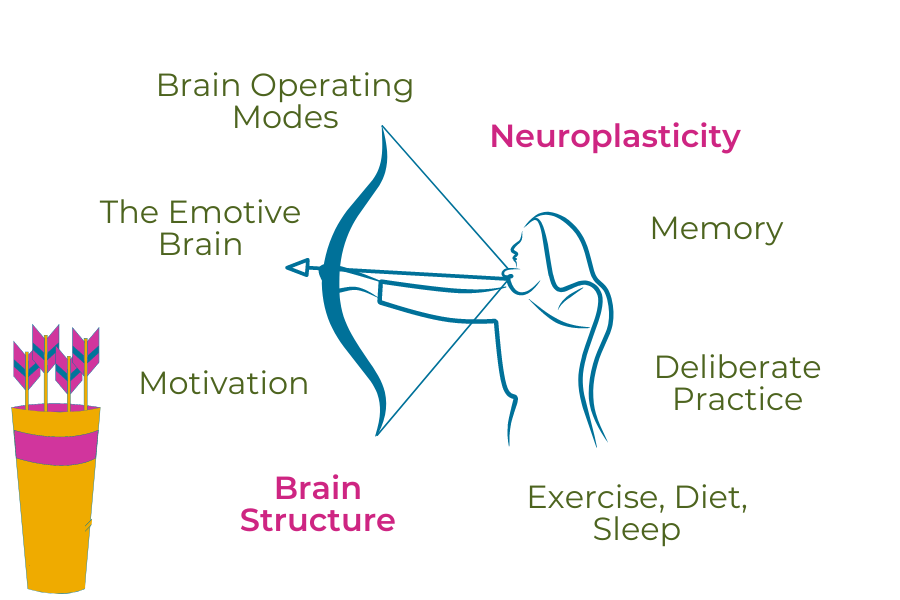
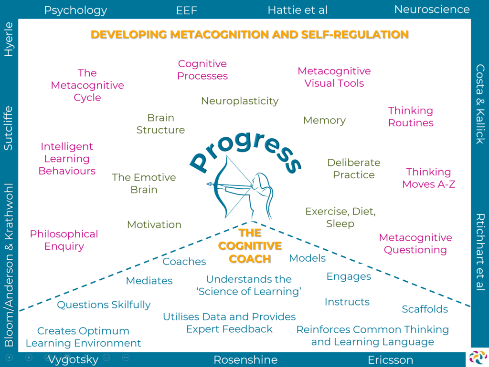

Neuroplasticity
What is Neuroplasticity?
It is defined as
ability of the nervous system to change its activity in response to intrinsic or extrinsic stimuli by reorganizing its structure, functions, or connections after injuries, such as a stroke or traumatic brain injury.
The human brain is composed of approximately 100 billion neurons. Early researchers believed that
neurogenesis, or the creation of new neurons, stopped shortly after birth.

Benefits of Neuroplasticity
There are many benefits of brain neuroplasticity. Allowing your brain to adapt and change helps promote:
- The ability to learn new things
-
The ability to enhance existing cognitive capabilities
-
Recovery from strokes and traumatic brain injuries
- Strengthening areas where function is lost or has declined
- Improvements that can boost brain fitness
How to Improve Neuroplasticity
Stimulating your brain by:
- Learning a new language
- Learning how to play an instrument
- Traveling and exploring new places
- Creating art and other creative pursuits
- Reading
For further detail → click here.
Growth Mindset
What is Growth Mindset?
Growth mindset describes
a way of viewing challenges and setbacks. People who have a growth mindset believe that even if they struggle with certain skills, their abilities aren't set in stone. They think that with work, their skills can improve over time.
How is neuroplasticity related to growth mindset?
By adopting a growth mindset and engaging in activities that challenge us, we can tap into the brain's neuroplasticity to rewire our thinking, acquire new skills, and achieve personal growth. This applies to various areas of life, such as education, career, relationships, and personal goals.

For further detail → click here.
Neuroplasticity & Growth Mindset into My Learning Journey
I will
- not be afraid of making mistakes and getting feedback
- always remind that something too hard only means not solved "yet"
- ask myself what more I can do
 Neuroplasticity & Growth Mindset
Neuroplasticity & Growth Mindset